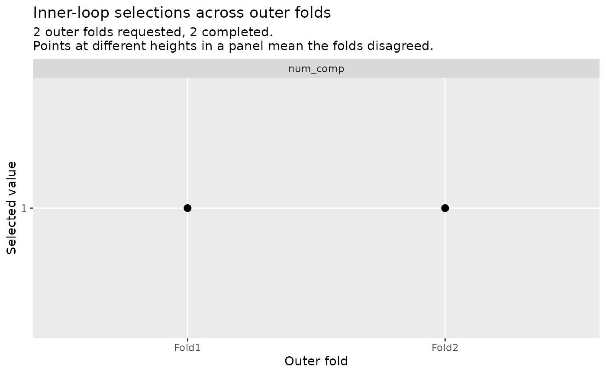
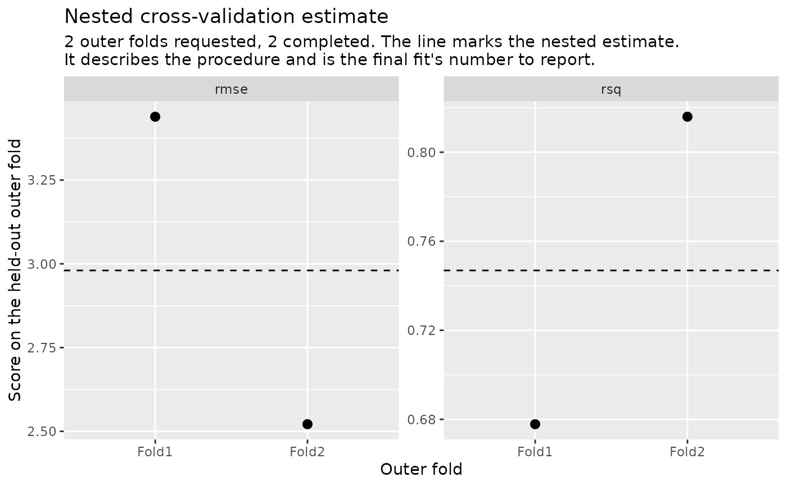

Two views of a nested_results object, both drawing one point per outer
fold with the folds in design order.
type = "parameters", the default, shows what each outer fold's inner
tuning selected. A flat row of points means the folds agreed; points at
different heights mean they disagreed, and the tuning procedure is unstable
on this data, which averaging the metrics hides. This is the view nothing
else in the ecosystem offers.
type = "performance" shows each outer fold's score on its held-out
assessment set, with a rule at the nested estimate: the same value
collect_metrics() reports.
Arguments
- object
A
nested_resultsobject fromnested_tune_grid()ornested_tune_bayes().- type
Which view to draw:
"parameters"(the default) or"performance".- ...
Not used; must be empty. An argument passed here is an error rather than silently ignored.
Details
An outer fold that failed keeps its place on the x axis and draws no point,
as does a fold that completed without recording a value for a parameter.
Neither is imputed and neither is dropped from the axis, so the shortfall is
visible in the figure itself. A run in which no fold completed is refused
with condition class nestedtune_no_completed_folds, as
collect_metrics(), agreement() and nested_final_fit() refuse it.
The subtitle states how much of the requested design ran. Contribution is
counted per panel instead, because it differs between them: a panel says so
when fewer folds contributed to it than completed, as in mtry (2 of 3 chose) or rmse (from 2 folds); an unqualified panel means every
completed fold contributed. A requested metric that no completed fold
could score keeps an empty panel rather than disappearing.
The selected-value axis is numeric when every value drawn is a number, and
discrete otherwise: a single axis cannot be both, and character-valued
tuning parameters are ordinary. A fold that selected NA is a value on that
discrete axis rather than an absent point.
Examples
data(mtcars)
rec <- recipes::step_pca(
recipes::recipe(mpg ~ ., data = mtcars),
recipes::all_predictors(),
num_comp = tune::tune()
)
wf <- workflows::workflow(rec, parsnip::linear_reg())
set.seed(1)
folds <- nested_resamples(
mtcars,
outside = rsample::vfold_cv(v = 3),
inside = rsample::vfold_cv(v = 3)
)
set.seed(2)
res <- nested_tune_grid(wf, folds, grid = data.frame(num_comp = 1:3))
autoplot(res)

autoplot(res, type = "performance")
